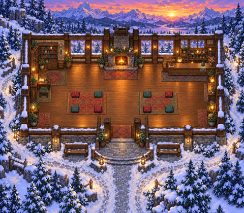

Original scene · static previewSocial & leisure
Ember Ridge Lodge
N01-r3
Current candidateA lodge landscape with open routes to cushion seating, designed for informal social gathering.
Public files: verification in progress
Play room: not registered / verified here
Features, tests & exact files
Configured in these files
- spatial layout (walkability untested)
- quiet-zone map property
No custom gameplay script or dedicated activity/service is supplied; titles such as Arcade or Film Society do not establish playable games or media services.
Test this revision next
- Open lodge/cushion access after central-table removal; check the formerly boxed-in layout remains connected.
- Test cushion arrivals from both sides without stepping into remaining furniture.
Common desktop / phone / multiplayer checks
Recovery & review
Recovered original authoring and exact runtime.
Recovered original source and runtime; historical checks retained; live acceptance not rerun
Preserved review and feedback · View exact source files on GitHub
Original review fields
- Design review
- Pending
- Desktop test
- Not tested
- Phone / touch test
- Not tested
- Media / multi-user test
- Not tested
- Decision
- Pending
- Feedback / next change
- The boxed-in first layout was rebuilt as a cohesive lodge landscape. Central tables were removed to open cushion access.
Public import files
Copy a TMJ URL into the custom-map import field. Import or configure the WAM separately where required. These JSON files are not game-room links.
- N01.tmj SHA-256 d8e48cbd12be7d3b132440e16bf5ea4e849b9e457f1d24457b302570887f2ecb
- N01.wam SHA-256 49984f484728ef3882fb8b25bb53fd0193eacb716582418a3c2f757ddb78a609
5 preserved files · 2.2 MB. Live gameplay acceptance is open.